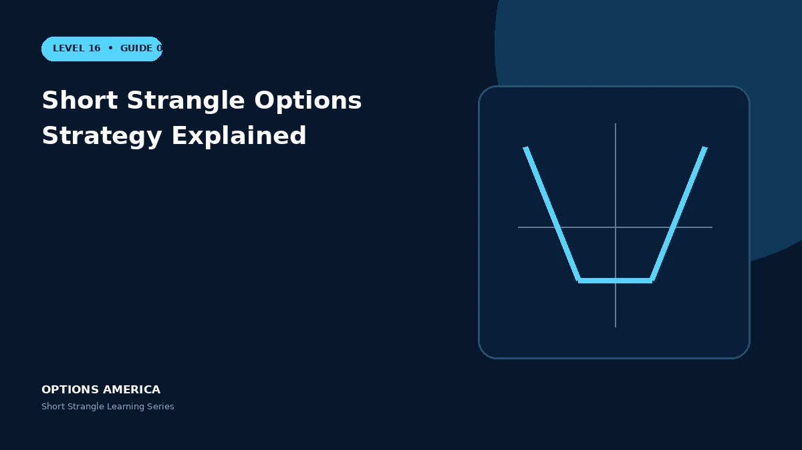

Learn how selling an OTM call and put creates a wide premium-selling range with substantial uncovered tail risk.
Construction
Sell one out-of-the-money put below the current price and one out-of-the-money call above it using the same expiration. The distance between strikes creates an initial range with both options OTM.
Profit and breakevens
Maximum profit equals the combined premium. Subtract the credit from the put strike for the lower breakeven and add it to the call strike for the upper breakeven at expiration.
Volatility and decay
Both short options usually create negative vega and positive theta. A quiet market and volatility contraction can help, but a fast directional move and IV expansion can work against both P&L and margin.
Undefined tails
The short call has theoretically unlimited upside loss; the short put has substantial downside loss. Distant strikes reduce initial delta but do not turn the position into defined risk.
A practical example
With stock at $100, sell the 90 put for $2 and 110 call for $1.50. The $3.50 credit creates expiration breakevens at $86.50 and $113.50 before costs.
This simplified scenario focuses on selected outcomes; live prices and risks will differ. Live option prices also reflect the underlying price, time decay, rates, dividends, liquidity and transaction costs. Greeks are theoretical estimates, not guarantees.
Build a risk-first trading plan
Before using short strangle options strategy explained, record the stock price, put and call strikes, expiration, total credit and contract multiplier. Calculate both breakevens, then estimate dollar loss beyond them under upside and downside gaps. A wide strike range improves the starting room but does not define either tail.
Stress several prices, time points and volatility levels, including a skew change that affects the put and call differently. Review delta, gamma, theta, vega and buying power for the complete portfolio. Multiple OTM positions can become tested together during a common market shock.
Define a profit target, maximum tolerated loss, tested-side trigger, margin reserve and latest exit date before entry. Decide whether an event is intentionally included and how assignment would be handled. Use multi-leg orders and confirm quantities after every fill, roll or partial close.
Document the result after exit, including slippage, assignment effects and the largest intraday exposure. Comparing the original forecast with the actual path helps distinguish a sound process from a lucky outcome and improves later strike, duration, margin-reserve and position-size choices under similar market conditions.
Frequently asked questions
What is maximum profit?
The total call and put premium received.
Is the loss defined?
No.
Why use OTM strikes?
They create an initial range around the stock price.
Continue the Short Strangle cluster
Explore related guides: How a Short Strangle Works · Short Strangle vs Iron Condor · Theta and Time Decay in a Short Strangle. For a structured sequence, use the free Level 16 – Short Strangle course.
Options involve risk and are not suitable for every investor. This material is educational and is not investment, tax or legal advice. Greeks are theoretical estimates, and contract terms and broker requirements can vary.